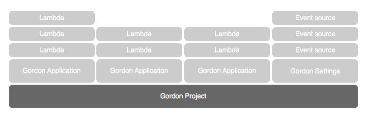

Project¶
Projects are the root container which contain all other resources. Projects are composed of:
Once you start using gordon, you’ll realize it makes sense to have several projects, and not only one monolitic one with dozens of applications.
This is not news to you if you have heard about microservices, but it is good to emphasize that massive projects might not a good idea (generally speaking).
As always, give it a shoot and decide what is better for you.
How can I create a new project?¶
Creating a new project is easy, you only need to run the following command:
$ gordon startproject demo
This will create a new directory called demo which will contain the most basic project. That’s a single settings.yml file:
demo
└── settings.yml
Project Actions¶
Once you have created your project, there are two main actions that you’ll run from the command line; build and apply.
build¶
Build is the action that will collect all registered resources in your project, and create several
templates in the _build directory which will represent everything you have defined.
As well as creating these templates, gordon will create all necessary artifacts that it’ll later upload to s3.
At this point, gordon will not use any AWS credentials. This is important.
What gordon generates in the build directory is merely declarative and completely agnostic of in which region or stage you’ll (later) deploy it. Gordon doesn’t know/care what is the current status (if any) of all those resources.
This is one of the greatness (and technical challenges) of gordon.
The number of required templates depend on you project, but these are all possible templates gordon will create:
| Acronym | Name | Description |
|---|---|---|
pr_p.json |
Pre Project | Custom template - This is not generally used |
p.json |
Project | CloudFormation template - Gordon will create a S3 bucket where it’ll upload your lambdas |
pr_r.json |
Pre Resources | Custom template - Gordon will generally upload your lambdas to S3. |
r.json |
Resources | CloudFormation template - Gordon will create your lambdas and event sources |
ps_r.json |
Post Resources | Custom template - This is not generally used |
apply¶
Apply is the action that will deploy your project to one specific region and stage.
| Term | Description |
|---|---|
region |
AWS cloud is divided in several regions. Each Region is a separate geographic area. AWS Regions and Availability Zones |
stage |
Stages are 100% isolated deployments of the same project. The idea is that the same project can be deployed in the same AWS account in different stages (dev, staging, prod...) in order to SAFELY test it’s behaviour. |
This command will:
- Collect all required parameters for this stage.
- Sequentially apply all gordon templates.
This command (for obvious reasons), will use your AWS credentials to apply your project templates.
Anatomy of the project¶
---
project: { STRING }
default-region: { AWS_REGION }
code-bucket: { STRING }
apps:
- { STRING }
vpc: { MAP }
contexts: { MAP }
Lambda Properties¶
Project Name¶
| Name | project |
| Required | Yes |
| Valid types | string |
| Description | Name for your Project |
default-region¶
| Name | default-region |
| Required | Yes |
| Valid types | string |
| Description | Default region where the project will be deployed |
code-bucket¶
| Name | code-bucket |
| Required | Yes |
| Valid types | string |
| Description | Base Name of the bucket gordon will use to store the source code of your lambdas and Cloudformation templates. |
Because the source code and the lambdas needs to be in the same region, gordon will create on bucket per region and stage following the following format:
$CODE_BUCKET-$REGION-$STAGE.
apps¶
| Name | apps |
| Required | Yes |
| Valid types | list |
| Description | List of installed apps |
By default when you create a project, gordon will include some applications which you’ll probably need. Those applications are called gordon.contrib applications and provide you (and your gordon project) with some basic functionalities that you (or gordon) might need.
vpc¶
| Name | vpc |
| Required | No |
| Valid types | map |
| Description | Map of vpc names with their respective security-groups and subnet-ids. |
For more information Lambdas vpc setting.
Example:
---
project: vpcexample
...
vpcs:
my-vpc:
security-groups:
- sg-00000000
subnet-ids:
- subnet-1234567a
- subnet-1234567b
- subnet-1234567c